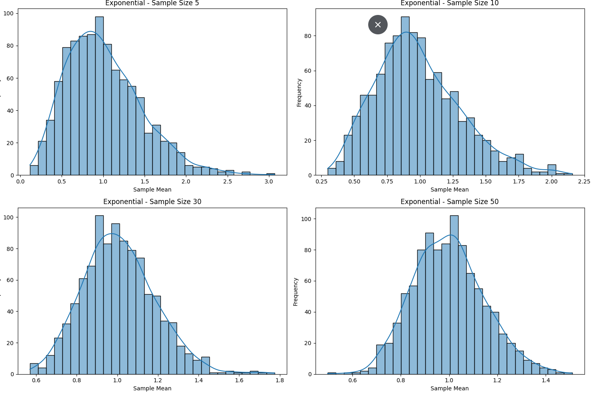
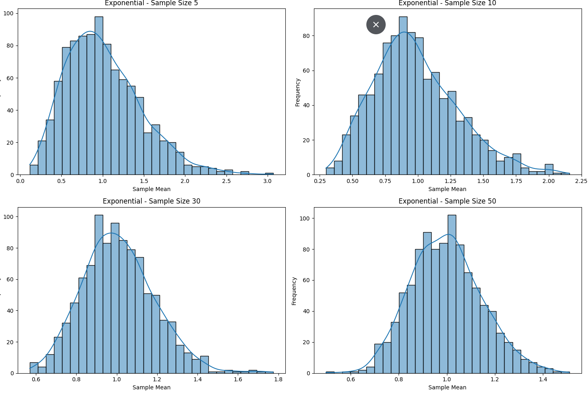

Advanced Statistical Simulations
Problem 1: Exploring the Central Limit Theorem (CLT) Through Simulations
Overview and Historical Context
The Central Limit Theorem (CLT) is a fundamental result in probability theory that emerged in the 18th century with early insights from Abraham de Moivre, and was formalized by Pierre-Simon Laplace and later by Lyapunov. It underpins the reliability of the normal distribution in inferential statistics.
The theorem states:
Given a population with finite mean \(\mu\) and finite standard deviation \(\sigma\), the sampling distribution of the sample mean \(\bar{X}\) of size \(n\) tends toward a normal distribution as \(n\) becomes large, regardless of the population’s original distribution.
Experimental Setup
We simulate three population types:
- Uniform distribution \(\mathcal{U}(0,1)\)
- Exponential distribution \(\text{Exp}(\lambda = 1)\)
- Binomial distribution \(\text{Bin}(n=10, p=0.5)\)
We generate: - A large population (\(N = 100,000\) values) - Sampling distributions for sample sizes \(n = \{5, 10, 30, 50\}\)
 


Real-World Implications
- Survey analysis: Estimating population opinions with confidence intervals.
- Industrial quality control: Using sample means to monitor process stability.
- Machine Learning: Underpins assumptions in regression and hypothesis testing.
Problem 2: Estimating \(\pi\) Using Monte Carlo Methods
Monte Carlo Methods: Background
Monte Carlo methods originated with Stanislaw Ulam and John von Neumann during nuclear simulations in the 1940s. They rely on random sampling to numerically approximate mathematical constants, integrals, and probabilities.
Part A: Unit Circle in a Square
Theory
Using geometry: - Area of unit circle: \(A_{\text{circle}} = \pi r^2 = \pi\) - Area of square enclosing it: \(A_{\text{square}} = (2r)^2 = 4\)
Thus, $$ \pi \approx 4 \cdot \frac{\text{Points inside circle}}{\text{Total points}} $$

Part B: Buffon’s Needle
Theory
Drop a needle of length \(l\) on parallel lines spaced \(d\) apart. The probability of crossing a line is: $$ P = \frac{2l}{\pi d} $$
So: $$ \pi \approx \frac{2lN}{dC} $$ where \(C\) is the number of crossings among \(N\) trials.
Final Thoughts
- CLT ensures the robustness of sampling in statistics, explaining the central role of the normal distribution.
- Monte Carlo methods demonstrate how randomness can converge on precise mathematical truths.
- These tools are foundational across data science, finance, physics, and AI.
References
- Ross, S. (2014). Introduction to Probability and Statistics for Engineers and Scientists.
- Grimmett & Stirzaker. (2001). Probability and Random Processes.
- Wikipedia: Central Limit Theorem, Buffon’s Needle, Monte Carlo Method.